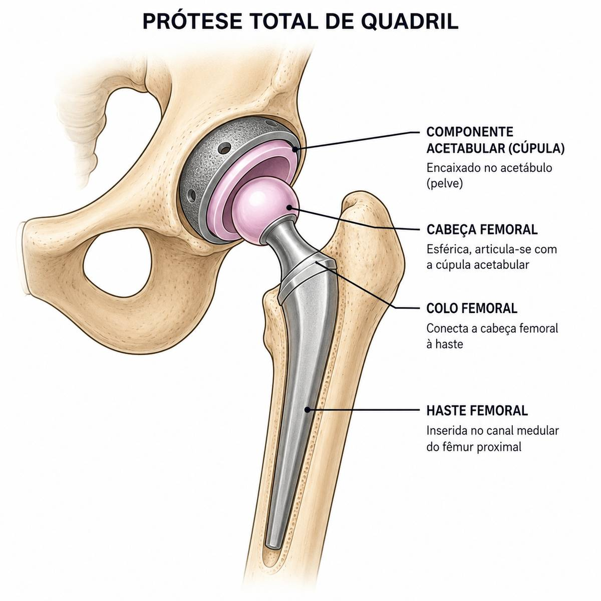

Início › Quanto custa a prótese de quadril
Custos da cirurgiaQuanto custa uma prótese de quadril?
É uma das primeiras perguntas de quem recebe a indicação da cirurgia, e uma das mais difíceis de responder com clareza na internet. Aqui está a resposta honesta, com dados de estudos brasileiros: os três caminhos para operar (SUS, convênio e particular), as faixas de valores e o que de fato entra na conta.
Revisado em 16 de agosto de 2026
A resposta rápida
Em uma frase
No Brasil existem três caminhos: pelo SUS a cirurgia é gratuita, mas há fila de espera; pelo plano de saúde a cobertura da cirurgia e da prótese é obrigatória quando há indicação médica; e no particular os valores costumam ficar entre R$ 40 mil e R$ 90 mil, podendo ultrapassar R$ 100 mil em hospitais de referência.
Essa é a fotografia geral. Mas quem está diante da decisão merece mais do que uma faixa larga de números: merece entender de onde eles vêm e por que variam. É o que fazemos a seguir, usando dois estudos brasileiros publicados em revista científica, um sobre o sistema público e outro sobre um grande hospital privado.
Por que o preço varia tanto
A cirurgia de prótese de quadril (o nome técnico é artroplastia total do quadril) não tem um preço de tabela porque não é um produto único: é um conjunto de serviços e materiais que muda de caso para caso. O modelo da prótese, o tipo de fixação, o hospital, o tempo de internação, a necessidade ou não de leito de terapia intensiva no primeiro dia e a complexidade do quadril de cada paciente mexem no valor final.
Um estudo brasileiro que acompanhou 1.061 pacientes operados em um grande hospital privado de referência em São Paulo ilustra bem essa variação: o custo total por paciente foi, em média, de R$ 43.324, mas os valores individuais foram de cerca de R$ 16.868 até R$ 147.082. Ou seja, entre o caso mais simples e o mais complexo do mesmo hospital, a diferença passou de oito vezes.
Vale um aviso de honestidade: esses números vêm de um estudo com pacientes operados entre 2012 e 2019, publicado em 2025. Com a inflação médica, os valores de hoje tendem a ser mais altos. Use-os como ordem de grandeza, não como orçamento.
Pelo SUS: gratuita, com fila
A prótese de quadril está entre os procedimentos oferecidos pelo Sistema Único de Saúde, sem nenhum custo para o paciente: cirurgia, prótese, internação e acompanhamento são cobertos. O SUS realiza milhares dessas cirurgias todos os anos. Apenas na cidade de São Paulo, um levantamento com dados públicos do DATASUS contabilizou 7.673 artroplastias eletivas de quadril na rede pública entre 2008 e 2019.
O ponto sensível do caminho público não é a qualidade, é o tempo. Por ser uma cirurgia eletiva (programada, não de urgência), ela entra em fila de espera, e o tempo até operar varia muito conforme a região e o serviço. Para quem tem dor limitante, essa espera pesa, e é justamente ela que leva muitas famílias a pesquisar o valor da cirurgia particular.
Um detalhe que costuma confundir: os valores que o SUS repassa aos hospitais por cada cirurgia são muito menores do que os preços do setor privado, porque seguem tabelas próprias do sistema público. No levantamento de São Paulo, o repasse médio por paciente ficou na casa de poucos milhares de reais. Esse número mede o financiamento público do procedimento, não o que a cirurgia custaria para uma pessoa física, então não sirva dele para comparar com orçamentos particulares.
Pelo plano de saúde: cobertura obrigatória
Se você tem plano de saúde regulamentado e recebeu indicação médica de prótese de quadril, a cobertura da cirurgia e do material é obrigatória. A artroplastia do quadril consta do rol de procedimentos da Agência Nacional de Saúde Suplementar, e a Lei 9.656/98 determina a cobertura de próteses e órteses ligadas ao ato cirúrgico. Em outras palavras: o plano não pode simplesmente se recusar a cobrir a prótese de uma cirurgia indicada.
Na prática, alguns pontos merecem atenção:
- as carências contratuais precisam estar cumpridas (em geral, até 180 dias para cirurgias, e regras próprias para doenças preexistentes);
- a operadora pode analisar o pedido e o material solicitado, e eventualmente indicar junta médica em caso de divergência, mas dentro de prazos regulados;
- o cirurgião justifica tecnicamente o modelo de prótese; a escolha do material é decisão técnica, não comercial;
- negativas indevidas podem ser contestadas na própria operadora, na ANS e, se necessário, judicialmente.
Para quem tem convênio, portanto, o custo direto da cirurgia tende a se resumir a coparticipações e diferenças de acomodação previstas em contrato, não ao valor cheio do procedimento.
Particular: as faixas de valores no Brasil
No caminho particular, os levantamentos e a prática do mercado brasileiro apontam uma faixa típica entre R$ 40 mil e R$ 90 mil pelo pacote completo, podendo ultrapassar R$ 100 mil em hospitais de alta referência, com equipes muito procuradas ou casos complexos. O estudo do hospital privado citado acima, com média de R$ 43 mil e casos chegando a R$ 147 mil, conversa exatamente com essa faixa.
Por que um intervalo tão largo? Porque o "preço da cirurgia" é, na verdade, a soma de várias contas independentes, e cada uma varia: o hospital cobra o pacote de internação e centro cirúrgico, a equipe cirúrgica cobra honorários, a anestesia cobra à parte, e a prótese tem preço próprio conforme o modelo. Dois orçamentos honestos para o mesmo paciente podem ser bem diferentes só pela combinação de hospital e implante.
Uma consequência prática: ao pedir orçamento, peça discriminado, item por item. É a única forma de comparar propostas de verdade e de entender o que está incluído (por exemplo, se revisões e fisioterapia iniciais entram no pacote).

O que entra na conta de uma prótese de quadril
Quando o orçamento chega, ele costuma reunir estes blocos:
- O implante (a prótese em si): o item mais caro da lista. Análises internacionais citadas na literatura estimam que cerca de metade do custo total da cirurgia corresponde ao valor do implante e dos materiais especiais.
- Hospital: diárias de internação, centro cirúrgico, medicamentos e materiais de uso hospitalar. No estudo brasileiro, a internação média foi de 4,6 dias.
- Equipe cirúrgica: honorários do cirurgião principal e dos auxiliares.
- Anestesia: honorários da equipe de anestesiologia, cobrados à parte na maioria dos serviços.
- Exames e avaliações: o preparo pré-operatório (exames de sangue, imagem, avaliação clínica e cardiológica quando indicada).
- Reabilitação: a fisioterapia após a cirurgia, essencial para o resultado, nem sempre está incluída no pacote e merece pergunta específica.
Se você quer entender o procedimento por trás desses números, veja como funciona a prótese de quadril e como é a recuperação, fase a fase.
Prótese cimentada ou não cimentada: muda o custo?
Existem duas grandes formas de fixar a prótese ao osso: com cimento ortopédico (cimentada) ou por encaixe sob pressão, em que o osso cresce e se integra ao implante (não cimentada), além das combinações híbridas. O levantamento do sistema público de São Paulo comparou as duas e trouxe achados interessantes: a fixação não cimentada ou híbrida foi a mais usada (81% dos casos), teve custo maior para o sistema, e a cimentada, por outro lado, exigiu em média quase um dia a mais de internação. Nas taxas de óbito, não houve diferença entre as técnicas.
A mensagem para o paciente é simples: a escolha entre cimentada e não cimentada é técnica, feita pelo cirurgião conforme a idade, a qualidade do osso e o caso, e não uma escolha de cardápio por preço. As duas funcionam bem quando bem indicadas.
Custo alto, retorno alto: o que a ciência mostra
Falar de dezenas de milhares de reais assusta. Por isso vale colocar na balança o que a cirurgia devolve. No mesmo estudo brasileiro de 1.061 pacientes, a qualidade de vida medida por um questionário padronizado (que vai de valores próximos de zero até 1) subiu de 0,49 antes da cirurgia para 0,89 dois anos depois, quase dobrando. A função do quadril e a dor melhoraram de forma expressiva já no primeiro ano e se mantiveram no segundo. Não à toa, a prótese de quadril é chamada na literatura médica de "a cirurgia do século".
E um achado do estudo merece destaque para quem está comparando orçamentos: não houve relação entre pagar mais e ter mais qualidade de vida depois. O custo total variou por características do hospital e do material, mas o resultado clínico não acompanhou o preço. Prótese adequada ao caso, bem indicada e bem operada é o que define o resultado, não o valor da nota fiscal. Já escrevemos em detalhe sobre o que muda na vida de quem opera, segundo um estudo de 5 anos.

Cuidados ao pesquisar preços
Sinais de alerta em orçamentos
- promessas de resultado garantido ou de recuperação sem riscos — nenhuma cirurgia tem garantia, e publicidade médica séria não promete resultado;
- preços muito abaixo do mercado sem explicação clara do que está incluído;
- orçamentos fechados que não discriminam hospital, equipe, anestesia e implante;
- pressão para decidir rápido ou fechar "promoção" de cirurgia;
- falta de clareza sobre qual prótese será usada e por quê.
O caminho seguro é sempre o mesmo: consulta com um ortopedista especialista em quadril, indicação bem estabelecida (a maioria das próteses é feita por coxartrose avançada que não melhorou com tratamento conservador), orçamento discriminado e todas as dúvidas respondidas antes de qualquer decisão.
Perguntas frequentes
Dúvidas sobre o custo da prótese de quadril
Quanto custa uma prótese de quadril particular?
A faixa típica no Brasil vai de R$ 40 mil a R$ 90 mil pelo pacote completo, podendo passar de R$ 100 mil em hospitais de referência. Um estudo em um grande hospital privado encontrou média de cerca de R$ 43 mil, com casos de R$ 17 mil a R$ 147 mil. O valor exato depende do hospital, da prótese e do caso, e é sempre sob consulta.
O SUS faz cirurgia de prótese de quadril?
Sim, sem custo para o paciente: cirurgia, prótese e internação são cobertas. O ponto de atenção é a fila de espera para cirurgias eletivas, que varia conforme a região.
O plano de saúde é obrigado a cobrir a prótese?
Sim. Com indicação médica, os planos regulamentados devem cobrir a cirurgia e o material, conforme a Lei 9.656/98 e o rol da ANS, respeitadas as carências do contrato. Negativas indevidas podem ser contestadas na operadora e na ANS.
Por que a cirurgia é tão cara?
Porque a conta soma o implante (cerca de metade do custo total, segundo análises internacionais), o hospital, a equipe cirúrgica, a anestesia, a internação, os exames e a reabilitação.
Prótese mais cara é melhor?
Não necessariamente. Um estudo brasileiro com mais de mil pacientes não encontrou relação entre o custo total e a qualidade de vida depois da cirurgia. O que define o resultado é a indicação correta e o material adequado ao caso.
Quanto tempo fico internado?
No estudo brasileiro em hospital privado, a internação média foi de 4,6 dias. Programas de recuperação acelerada têm encurtado esse tempo em muitos serviços; o seu cirurgião estima o prazo para o seu caso.
Em resumo
- Três caminhos: SUS (gratuito, com fila), plano de saúde (cobertura obrigatória com indicação) e particular.
- No particular, a faixa típica vai de R$ 40 mil a R$ 90 mil, podendo passar de R$ 100 mil em hospitais de referência.
- Um estudo brasileiro encontrou média de R$ 43 mil por paciente, variando de R$ 17 mil a R$ 147 mil.
- O implante responde por cerca de metade do custo total; peça sempre orçamento discriminado.
- Pagar mais não significou melhor resultado no estudo: indicação correta vale mais que preço.
- A qualidade de vida dos operados quase dobrou em dois anos, o que explica a fama de "cirurgia do século".
Referências
- Viamont-Guerra MR, Sasai AT, Rodrigues JM, Guimarães R, Antonioli E, Lenza M. Cost and quality of life in patients underwent hip arthroplasty in a Brazilian hospital. Acta Ortopédica Brasileira. 2025;33(2):e280114.
- Guimarães RP, Viamont-Guerra MR, Antonioli E, Lenza M. Total hip arthroplasty in the public health system of São Paulo: comparing types of fixation. Acta Ortopédica Brasileira. 2022;30(5):e251150.
- Brasil. Lei nº 9.656, de 3 de junho de 1998. Dispõe sobre os planos e seguros privados de assistência à saúde. Agência Nacional de Saúde Suplementar (ANS), rol de procedimentos e eventos em saúde.
- Learmonth ID, Young C, Rorabeck C. The operation of the century: total hip replacement. The Lancet. 2007;370(9597):1508-19.
Cirurgiões de quadril em Curitiba
Procurando um cirurgião de quadril?
Este site é informativo e mantém, gratuitamente, um espaço de indicação de cirurgiões de quadril em Curitiba. É um profissional que cuida da articulação e quer aparecer aqui? Escreva para curitibaquadril@gmail.com.
Prefere abrir direto? Escrever pelo Gmail ou usar o app de e-mail.
Indicação gratuita e sem fins comerciais. Cada profissional é responsável pela própria publicidade perante o CFM.